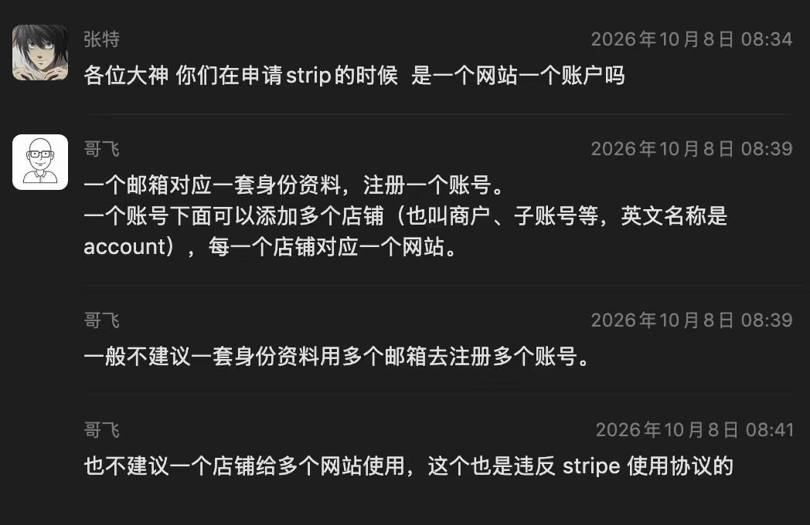
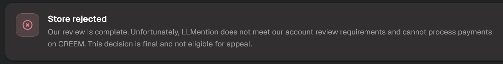
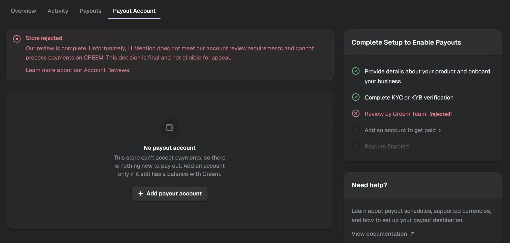
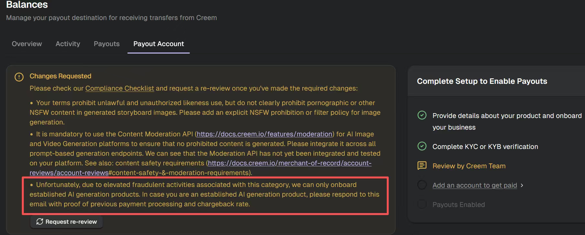
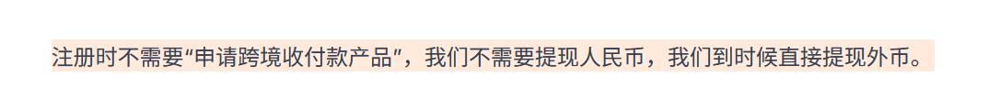

这段 2026年10月25日深夜的讨论，起点不是支付接口，而是一个更现实的问题：个人、没有公司、没有个体工商户，做 AI 内容站时，怎样先通过支付平台的商户审核并收到外币。群聊没有给出一个适用于所有人的平台答案，但把几个真正卡住的地方拆开了：Creem 对 AI 生成内容的风控、Stripe 的账户与 store 关系、PayPal 的 .cn/.com 入口差异，以及 Waffo.ai 在个人起步阶段的审核速度。
结论：平台速度、主体资格与网站合规是三件事
如果目标是尽快把第一笔外币收款跑通，对话中对 Waffo.ai 的反馈最集中：有人当天通过，有人说一天，也有人在几小时内审完。PayPal 也被确认存在从 .cn 进入 .com、承接跨境收款并直接提现外币的路径，但个人是否需要营业执照，聊天里仍有不同说法。Stripe 被讨论最多的是账户结构，而不是个人开户门槛；Creem 则明确暴露了 AI 图像、视频产品的合规审核要求。
| 路径 | 对话里能确认的事实 | 仍不能直接下结论的部分 |
|---|---|---|
| Creem | 申请提交很快，但审核严格；一个 store 被最终拒绝且不可申诉，另一个页面要求补充 AI 内容安全与经营记录 | 最终拒绝的具体原因没有给出，不能把另一页的整改项直接当成本次拒审原因 |
| Paddle | sandbox 假支付测试已通过，正在等待域名审核 | 个人主体最终能否通过、域名审核要多久，聊天没有结果 |
| Stripe | 一个邮箱对应一套身份资料和一个账号；账号下可添加多个 store/account，每个 store 对应一个网站 | 个人、海外公司或香港公司究竟哪条路径可用，聊天没有给出官方答案 |
| PayPal | 可从 .cn 页面进入 .com；有人正在用它做海外收款，截图说明可直接提现外币 | 另一位参与者称 .com 至少需要个体工商户执照；具体账户类型与地区要求没有统一结论 |
| Waffo.ai | 多人反馈当天、一天或几小时内通过；有人从 Stripe 个人户受阻后转到 Waffo.ai | 只是群友经验，不能替代当期官方准入、费率和长期风控规则 |
| LS + WorldFirst | 提交受阻，参与者怀疑原因是个人没有公司或个体工商户 | 原文没有给出平台拒绝结果和具体原因，只能视为未跑通的一条尝试 |
Stripe：一个身份一个账号，一个 store 对应一个网站
Alex 先用一张 2026年10月8日的历史聊天截图作为参照，问题是他只有一个身份、没有公司，是否必须准备海外公司或香港公司。截图能先回答的是 Stripe 的账户层级，而不是主体资格审查：不要用一套身份资料反复注册多个账号，也不要把多个网站塞进同一个 store。

截图中的规则可以压缩成三层：一个邮箱对应一套身份资料；一个身份资料注册一个账号；账号下可以按网站创建多个 store。一般不推荐同一套资料用多个邮箱注册多个账号，也不推荐一个 store 承接多个网站。这个结构能降低内部管理混乱，但不能替代 Stripe 对经营主体、业务地区和产品类型的审核。
Creem：先分清“最终拒绝”和“整改后重审”
Alex 的经验是申请本身很快，真正难的是审核：资料填错会退回，网站内容写不好也可能被拒。他账号里的 A store 已经显示最终拒绝，B store 当时预计也会被拒；他明确说平台没有给出具体理由。下面两张图分别是拒绝提示条和完整页面，核心状态都是 store rejected。


另一张截图则不是最终拒绝，而是 Changes Requested。页面列出三组需要整改的内容：生成式图像条款要明确禁止色情或其他 NSFW 内容并进行过滤；所有基于提示词的图像和视频生成入口都要接入并测试 Content Moderation API；平台对 AI 生成类目只接收成熟产品，并要求提供既有付款处理和拒付率证明。由于聊天没有确认这两张页面是否属于同一轮审核，正确用法是把后者当作重新提交前的检查表，而不是替 Creem 猜测拒审原因。

- 产品条款和生成页面都要明确禁止 NSFW 内容，并说明过滤策略，不能只在注册时放一条泛化声明。
- 若网站提供基于提示词的图像或视频生成，要检查所有生成入口是否都经过内容审核，而不是只保护首页或某一个表单。
- 新站被要求提供历史付款与拒付率时，应先判断自己是否符合平台的成熟产品准入条件；不符合就换通道或调整产品阶段。
- 网站名称、产品说明、域名、主体资料和实际生成流程要互相对应，避免审核员在页面上找不到申请时填写的内容。
- 被拒后先读清是最终拒绝、可修改重审，还是缺少材料；三种状态的下一步不同，不能一律重复提交。
聊天里一度有人提出“找人做几笔交易”来满足新站缺少交易记录的问题。这条路不应采用：伪造交易证明会放大拒付、冻结和封户风险，也违背支付平台对真实经营记录的要求。没有历史数据时，更合适的是选择允许新业务起步的通道，或者等产品和真实交易记录成熟后再申请。
PayPal：.cn 更像入口，跨境收款发生在 .com 流程里
Alex 一开始判断 PayPal.cn 只有支付、没有收款，并称 PayPal.com 至少需要个体工商户执照。SAI 随后纠正：PayPal.cn 有收款功能，需要从 .cn 页面点进 .com；另一位群友也提示社群网站里有教程。这个信息至少解决了一个路径问题：不要只停留在 .cn 的功能列表，要沿页面进入真正的跨境收付款流程。

截图进一步说明，注册时不需要先申请“跨境收付款产品”；如果业务不需要提现人民币，可以直接在后续流程提现外币。但这条说明没有解决主体资格争议：聊天中仍然有人认为 .com 需要个体工商户执照。更稳妥的理解是，入口、收款能力与主体门槛要分别核验，不能因为能进入页面就认定一定能通过 KYC/KYB。
- 先用当天浏览器从 PayPal.cn 页面进入 .com，记录最终落地的是哪个产品、账户类型和地区版本，不凭旧截图判断。
- 在正式提交资料前，检查个人账户是否支持目标币种收款、提现外币和绑定当前银行账户。
- 如果 .com 在 KYC 阶段要求个体工商户或企业资料，就停止重复申请，转去核对 Waffo.ai 等替代通道或重新评估主体方案。
- 审核通过后先做一笔小额真实交易，完整走完收款、结算和提现，再接入正式流量。
Waffo.ai：这一轮里最值得先验证的速度候选
blessed 表示，自己的 Stripe 个人户没有搞定后转到 Waffo.ai，这是第一个支付接入；上一周提交到审核通过大约一天。另有群友说当天完成，宽也表示自己刚审完一个，从提交到通过约几个小时。三个人的业务不完全相同，因此不能保证所有 AI 产品都能同样通过，但这组反馈足以把 Waffo.ai 放进“先验证”的候选，而不是先假设必须立刻注册海外公司。
对话中也出现了“审核一周起步、每个站都要审”的说法，但消息没有明确把这句话绑定到 Waffo.ai，随后很快又有人说一天通过。由于缺少完整引用对象，这里不能把它算作 Waffo.ai 的固定审核周期。平台名称相同也不代表账户类型、业务类目和审核队列相同，实际仍要以提交当天的后台状态为准。
blessed 仍打算再开 Stripe 商户，原因是其他业务也能复用，并不是因为 Waffo.ai 已经失败。这个取舍说明主通道与备用通道可以并存：先用门槛低、审核快的通道上线，等交易、产品和主体资料更成熟，再补 Stripe 或其他长期通道。
一条更稳妥的落地顺序
- 先写清真实主体：目前是个人、个体工商户还是公司，注册地和目标客户在哪里。不要为了过某个平台先编造主体。
- 把产品类型、收费方式、目标国家、结算币种和提现账户列成一张表，再逐项对照平台当期官方准入规则。
- 如果做 AI 图像或视频生成，先把 NSFW 条款、内容审核入口、退款与拒付流程补齐；不要等被拒后才补页面。
- 从当前反馈最快、且允许自己主体类型的通道开始验证。对话中的优先候选是 Waffo.ai，但前提是当天官方规则仍支持当前业务。
- 严格按平台账户层级接入：同一身份不要重复注册多个账号；一个网站对应一个 store，主站、子站和不同产品不要混用。
- 审核通过后只做一笔低风险真实交易，验证收款、结算、提现、退款和凭证保存，再开放正式流量。
- 准备第二条通道，但不要为了“备用”重复提交同一套主体资料；备用通道也要能独立完成 KYC 和提现。
- 只有在一个或多个平台明确要求、且公司主体能带来长期经营价值时，再评估海外公司或香港公司，不要只把注册公司当成绕过审核的动作。
这段聊天仍然没有回答什么
- 没有公司或个体工商户的个人，是否一定可以开 Stripe，聊天没有官方答案。
- PayPal.com 对当前中国个人主体是否强制要求个体工商户执照，仍有相互冲突的个人经验，需要当日进入实际 KYC 流程核验。
- Waffo.ai 对个人、不同 AI 类目和不同交易规模的长期准入与限额，只有短期审核速度反馈，没有完整条款结论。
- Creem 本次最终拒绝的具体原因，以及整改项是否适用于同一 store，聊天没有给出可复核证据。
- Paddle 域名审核结果、LS + WorldFirst 的具体失败原因，以及海外公司与香港公司方案的长期稳定性，均未得到回答。
- 费率和结算周期同样没有数据，不能仅凭“审核快”判断某个平台的综合成本最低。